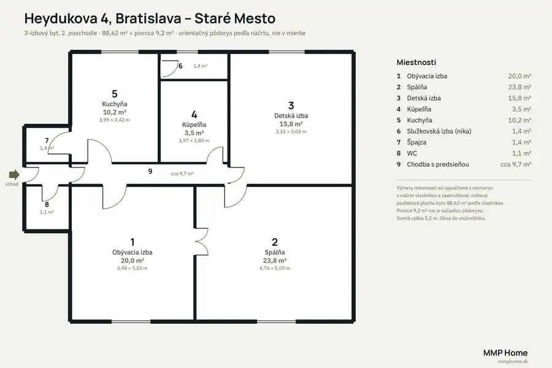
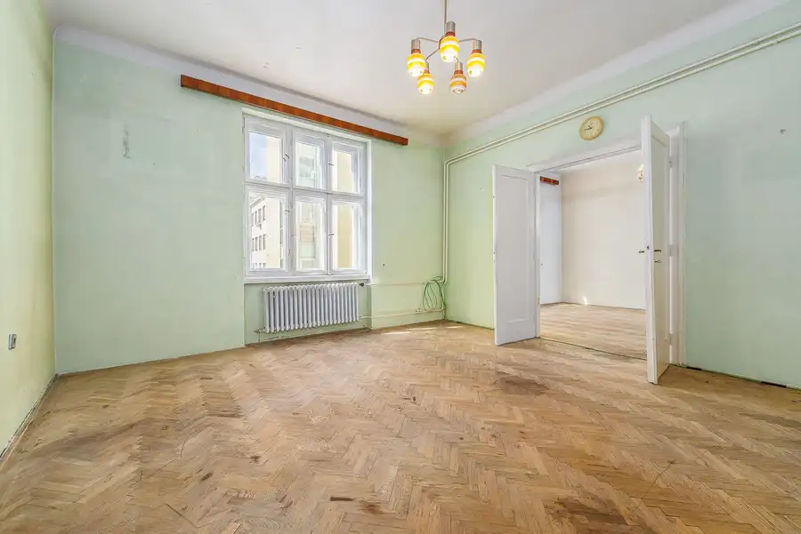
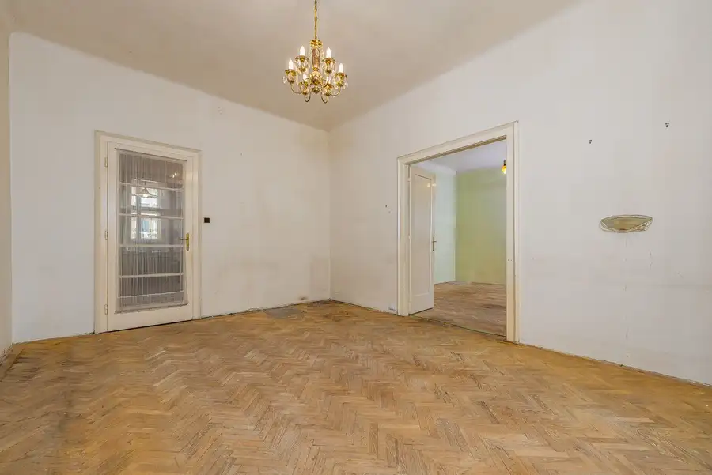
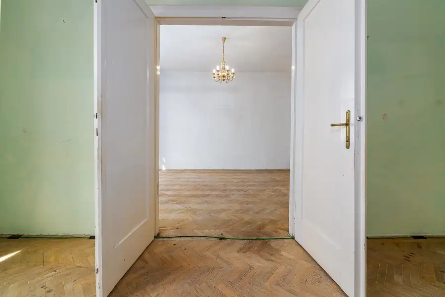
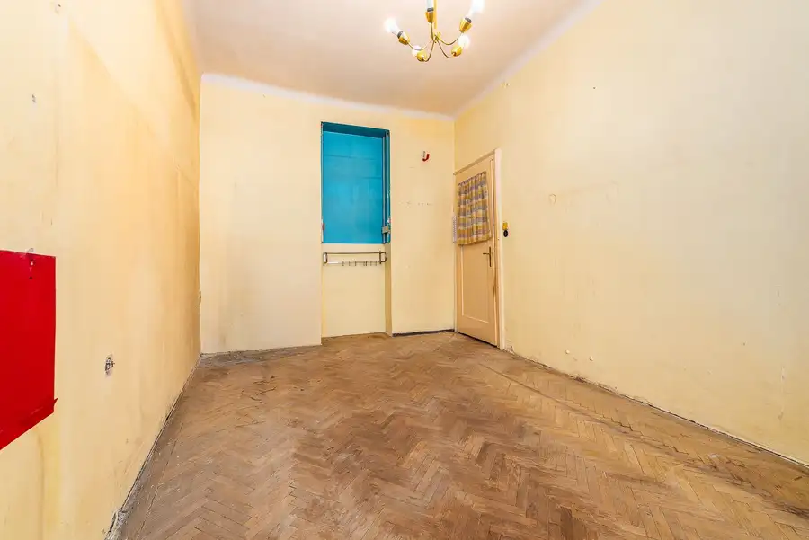
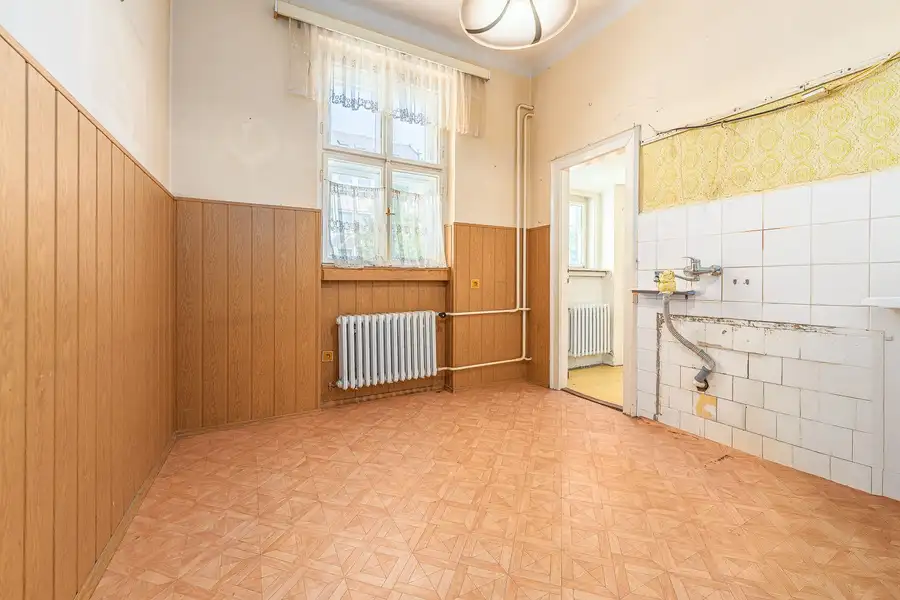

3-izbový byt 89 m² v pôvodnom stave, Heydukova 4, Staré Mesto
Staré Mesto, Bratislava







- Dispozícia3-izbový
- Plocha89 m²
- Poschodie2. z 4
- StavPôvodný stav
- VlastníctvoOsobné
O nehnuteľnosti
MMP Home ponúka na predaj 3-izbový byt s výmerou 89 m² na 2. poschodí tehlového domu z roku 1929 na Heydukovej ulici 4 v Bratislave-Starom Meste. Byt je v kompletne pôvodnom stave, vyprataný a pripravený na rekonštrukciu podľa predstáv nového majiteľa. K bytu patrí pivnica 9,2 m². DispozíciaTri samostatné izby (20,0 m², 23,8 m² a 15,8 m²), kuchyňa 10,2 m², kúpeľňa s vaňou, samostatné WC, špajza, malá služobná nika pri kuchyni a chodba s predsieňou. Obývacia izba a spálňa sú prepojené dvojkrídlovými dverami. Veľkorysá spálňa (4,76 × 5,00 m) a kuchyňa dávajú priestor na zmenu dispozície, napríklad na štvrtú izbu. Všetky okná smerujú do tichého vnútrobloku, orientácia juhozápad a severovýchod. Pôdorys je v galérii. Čo byt ponúkaSvetlá výška 3,2 m, pôvodné dubové parkety v izbách, špaletové okná, vlastný plynový kotol. DomTehlový činžiak z roku 1929 s drevenými trámovými stropmi, bez výťahu. Strecha je zrekonštruovaná, fasáda, vchod a spoločné rozvody sú pôvodné. V dome sa bežne prevádzkuje krátkodobý prenájom, čo je relevantné pre investorov. PolohaHeydukova je pokojná ulica medzi Obchodnou a Špitálskou – 5 minút pešo na Obchodnú ulicu, Kamenné námestie a Hurbanovo námestie, 10 minút na Hlavné námestie. Zastávky električiek a trolejbusov v okolí, parkovanie v rezidenčnej zóne (parkovacia karta pre vlastníka s trvalým pobytom). Náklady a právny stavFond opráv 120 €/mesiac, plyn cca 100 €/mesiac, elektrina podľa spotreby. Byt je v osobnom vlastníctve, bez nájomcu, bez hypotéky. Všetky podmienky vopred a písomne, bez skrytých poplatkov. Cena 379 000 € vrátane pivnice. Obhliadky po dohode, kontaktujte Michal Ščepka, MMP Home: +421 905 783 299, scepka@mmphome.sk.
Parametre
- Cena vrátane energií
- Nie
- Druh
- 3 izbový byt
- Dátum zverejnenia
- 14. 09. 2026
- Energetický certifikát budovy
- nie je
- Orientácia
- Juhozápadná, Severovýchodná
- Podlažie
- 2
- Počet izieb / miestností
- 3
- Počet nadzemných podlaží
- 4
- Počet spální
- 3
- Rok výstavby
- 1923
- Stav nehnuteľnosti
- Pôvodný stav
- Typ
- Predaj
- Typ konštrukcie
- Tehlová
- Vlastníctvo
- Osobné
- Úžitková plocha
- 89 m²